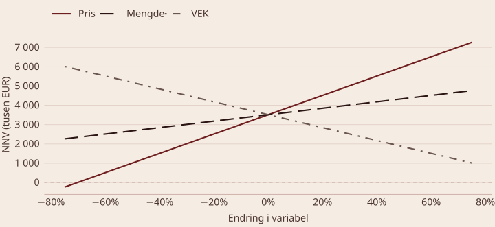
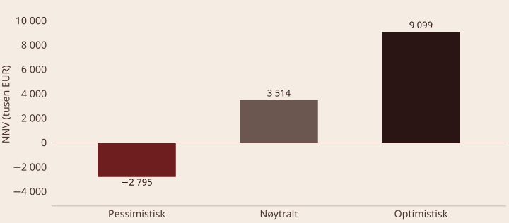
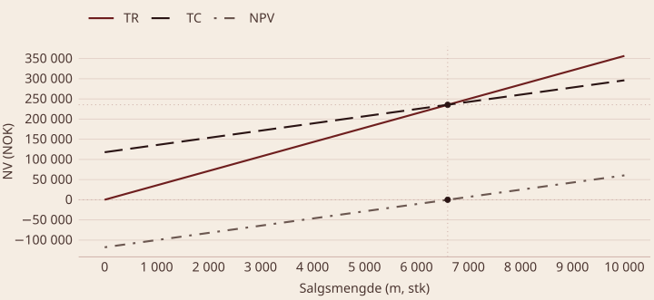
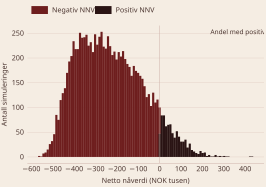
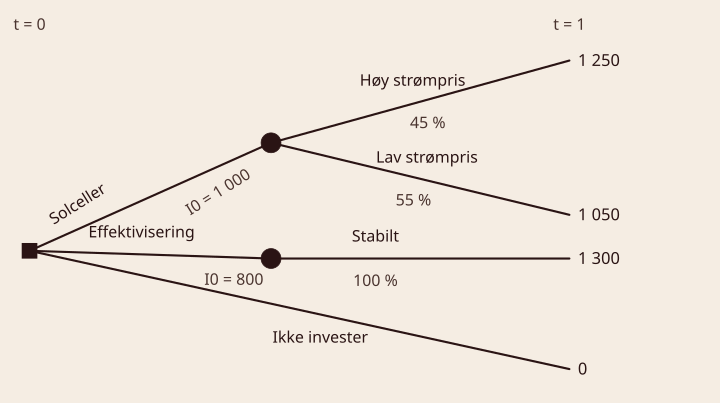

BED3 — Investering og finans · Forelesning 4
Norges Handelshøyskole
| Analysenivå | Interessegruppe | Relevant risiko |
|---|---|---|
| Prosjekt | Prosjektdeltakere | All prosjektrisiko |
| Selskap | Ansatte i selskapet | Prosjektrisiko + samvariasjon med øvrige selskapsaktiviteter |
| Bransje | Selskap norsk sokkel | Prosjektrisiko + samvariasjon med samlet bransjeaktivitet |
| Norske børsselskaper | Aksjeinvestorer | Prosjektrisiko + samvariasjon med børsselskaper |
| Hele Norge | Innbyggerne | Samvariasjon med innenlandsk BNP |
| Hele verden | Norge | Samvariasjon med internasjonal samfunnsportefølje |
Endre én variabel av gangen
| Linje | År | 0 | 1 | 2 | 3 | 4 | 5 |
|---|---|---|---|---|---|---|---|
| 1 | Salgsmengde (stk) | 10 000 | 10 000 | 11 000 | 12 100 | 12 100 | |
| 2 | Salgspris (EUR) | 600 | 600 | 600 | 600 | 600 | |
| 3 | VEK (EUR) | 400 | 400 | 400 | 400 | 400 | |
| 4 | Investering og skrapverdi | −5 000 | 1 638,4 | ||||
| 5 | DB | 2 000 | 2 000 | 2 200 | 2 420 | 2 420 | |
| 6 | Betalbare FK | −93,6 | −93,6 | −93,6 | −93,6 | −93,6 | |
| 7 | Arbeidskapital | −563 | −55 | −60,5 | 678,5 | ||
| 8 | KS TK | −5 563 | 1 906,4 | 1 851,4 | 2 045,9 | 2 326,4 | 4 643,3 |
Benytter opprinnelig KS for TK før skatt, lån og inflasjon, og ser bort fra smitteeffekter (beløp i tusen euro).
Utgangspunkt
NNV = -5\,563 + \frac{1\,906{,}4}{1{,}095} + \frac{1\,851{,}4}{1{,}095^{2}} + \frac{2\,045{,}9}{1{,}095^{3}} + \frac{2\,236{,}4}{1{,}095^{4}} + \frac{4\,643{,}3}{1{,}095^{5}} \approx 3\,514
NNV = -5\,563 + \sum_{t=1}^{5} \frac{[(P - vek) \cdot m - FK]}{1{,}095^{t}} - \frac{55}{1{,}095^{2}} - \frac{60{,}5}{1{,}095^{3}} + \frac{1\,638{,}4 + 678{,}5}{1{,}095^{5}}

Q1: Hva er hovedformålet med et stjernediagram? Å identifisere hvilke variabler som har størst innvirkning på prosjektets netto nåverdi.
Q2: Hvorfor bruker vi prosentvise endringer i variabler? Prosentvise endringer tillater sammenligning mellom variabler som har forskjellige måleenheter.
Q3: Hva er en svakhet ved å analysere variabler isolert? Det tar ikke hensyn til samvariasjon mellom variabler eller sannsynligheten for endringene.
Endre flere variabler
| Parameter | Pessimistisk | Forventet | Optimistisk |
|---|---|---|---|
| Salgspris (EUR) | 500 | 600 | 650 |
| Salgsvolum (stk) | 7 000 | 10 000 | 11 500 |
| Variable kostnader (EUR/stk) | 450 | 400 | 350 |
| Faste kostnader (EUR) | 102 000 | 93 600 | 85 200 |
| Netto nåverdi (tusen EUR) | −2 795 | 3 514,2 | 9 098,6 |
Parameterverdier for pessimistisk, forventet og optimistisk scenario. Ser på totalkapital før skatt uten inflasjon og smitteeffekter.

Q1: Hvordan skiller scenarioanalyse seg fra følsomhetsanalyse? Scenarioanalyse endrer flere variabler samtidig, mens følsomhetsanalyse endrer én variabel av gangen.
Q2: Hva er hovedformålet med scenarioanalyse? Å gi en bred forståelse av risiko og muligheter ved å analysere ulike fremtidsbilder.
Q3: Hva er en utfordring med å lage et pessimistisk scenario? Å definere realistiske kombinasjoner av lave inntekter og høye kostnader som er konsistente.
Tid til positiv kontantstrøm
Definisjon — payback Paybackmetoden måler hvor lang tid det tar før en investering er tilbakebetalt ved hjelp av prosjektets kontantstrømmer. Tiden beregnes i år, og metoden brukes ofte som en enkel indikator på likviditetsrisiko.
Eksempel — payback for et fireårig prosjekt Investeringskostnad 33 000 · årlig kontantstrøm 15 000 · avkastningskrav k = 10\ \%
PB \text{ (uten renter)} = \frac{33\,000}{15\,000} = 2{,}2 \text{ år}
Eksempel — payback for et fireårig prosjekt Investeringskostnad 33 000 · årlig kontantstrøm 15 000 · k = 10\ \%
0 = -33 + 15 \cdot A_{10\%,\,PB} 2{,}2 = \frac{1 - \left(\frac{1}{1{,}10}\right)^{PB}}{0{,}10}
1 - 0{,}22 = \left(\frac{1}{1{,}10}\right)^{PB} PB = \frac{\ln(0{,}78)}{\ln\left(\frac{1}{1{,}10}\right)} \approx 2{,}6
| Steg | År 0 | År 1 | År 2 | År 3 | År 4 |
|---|---|---|---|---|---|
| Kontantstrøm CF_t | −33 000 | 12 000 | 15 000 | 18 000 | 10 000 |
| Diskonteringsfaktor A_{10\%,t} | — | 0,909 | 0,826 | 0,751 | 0,683 |
| Diskontert KS | −33 000 | 10 908 | 12 390 | 13 518 | 6 830 |
| Kumulativ kontantstrøm | −33 000 | −22 092 | −9 702 | 3 816 | 10 646 |
T = 2 + \frac{9\,702}{13\,518} \approx 2{,}7 \text{ år}
Q1: Hva er formålet med paybackmetoden? Å finne hvor lang tid det tar før investeringskostnaden er tilbakebetalt med prosjektets kontantstrømmer.
Q2: Hvordan påvirker renter beregningen av paybacktid? Renter gjør at kontantstrømmer diskonteres til nåverdi, noe som ofte gir en lengre paybacktid enn beregning uten renter.
Q3: Hva er en svakhet ved paybackmetoden? Metoden ignorerer kontantstrømmer etter paybacktiden og, i noen tilfeller, tidsverdien av penger.
Hvor inntekter møter kostnader
Definisjon — break-even Break-even analyse identifiserer det punktet hvor totale inntekter TR er lik totale kostnader TC. Punktet bestemmes av salgspris per enhet, variable kostnader per enhet og faste kostnader.
Inputdata
m = 10\,000:\quad \frac{200\,000}{1{,}08} + \frac{200\,000}{1{,}08^2} = 357\,000 \text{ NOK}
m = 5\,000:\quad \frac{100\,000}{1{,}08} + \frac{100\,000}{1{,}08^2} = 178\,000 \text{ NOK}
m = 10\,000:\quad 100\,000 + \frac{110\,000}{1{,}08} + \frac{110\,000}{1{,}08^2} = 296\,000 \text{ NOK}
m = 5\,000:\quad 100\,000 + \frac{60\,000}{1{,}08} + \frac{60\,000}{1{,}08^2} = 207\,000 \text{ NOK}
BE = 6\,600 \text{ enheter}

Q1: Hva er formålet med en break-even analyse? Å finne salgsvolumet der totale inntekter er lik totale kostnader, og prosjektet verken gir tap eller overskudd.
Q2: Hvordan påvirker en økning i faste kostnader break-even punktet? Break-even punktet flyttes opp, fordi det kreves et høyere salgsvolum for å dekke de økte kostnadene.
Q3: Hvorfor er det viktig å kjenne break-even punktet på forhånd? Det gir en forståelse av prosjektets økonomiske risiko og hvor realistisk det er å oppnå lønnsomhet.
Mange utfall, én fordeling
Definisjon — simulering Simulering etterligner virkelige situasjoner ved å bruke modeller som representerer usikre variabler. Målet er å forstå hvordan variasjon i input påvirker prosjektets utfall, som netto nåverdi.

Datagrunnlag
Andel scenarioer med positiv NNV: 8,2 %
Q1: Hva er formålet med simulering i kapitalbudsjettering? Å vurdere hvordan usikkerhet i nøkkelvariabler påvirker netto nåverdi og andre prosjektresultater.
Q2: Hvorfor er spesifikasjon av sannsynlighetsfordelinger viktig? Fordelingene reflekterer usikkerheten i variablene, og feil spesifikasjon gir feilaktige simuleringer og beslutningsgrunnlag.
Q3: Hva er en svakhet ved simulering? Simulering krever nøyaktig datagrunnlag og modeller, og feil kan gi misvisende resultater. Det kan også være ressurskrevende.
Veivalg under usikkerhet
Definisjon — beslutningstre En grafisk representasjon av en beslutningsprosess under usikkerhet. Består av beslutningsnoder (valgene), utfallsnoder (usikre utfall med sannsynligheter) og grener (alternativene som følger fra en node). Diskontering av konsekvensverdier må foretas.
EV = \sum (\text{Verdi} \cdot \text{Sannsynlighet})
Eksempel
EV_{\text{Alt 1}} = (200\,000 \cdot 0{,}7) + (-100\,000 \cdot 0{,}3) = 110\,000 \text{ NOK}
EV_{\text{Alt 2}} = 100\,000 \cdot 1 = 100\,000 \text{ NOK}
| Alternativ | Økonomiske utfall | Miljøpåvirkning |
|---|---|---|
| 1: Solcelleanlegg | Høy strømpris (45 %): inntekt 1 250 000 NOK · lav strømpris (55 %): inntekt 1 050 000 NOK · kostnad 1 000 000 NOK | Betydelig reduksjon i karbonutslipp · grønnere omdømme |
| 2: Energieffektivisering | Stabilt energimarked (100 %): inntekt 1 300 000 NOK · kostnad 800 000 NOK | Moderat reduksjon i karbonutslipp |
| 3: Gjør ingenting | Ingen investering, kostnad eller inntekt | Lite miljøvennlig energikilde beholdes · potensielt negativt omdømme |

Beslutningstre som viser alternativer, sannsynligheter og utfall. Alle beløp i tusen kroner.
Alternativ 1: solcelleanlegg (tall i tusen kroner)
\text{Høy strømpris:}\quad NNV = \frac{1\,250}{1{,}15} - 1\,000 = 1\,087 - 1\,000 = 87
\text{Lav strømpris:}\quad NNV = \frac{1\,050}{1{,}15} - 1\,000 = 913 - 1\,000 = -87
E(NNV) = (87 \cdot 0{,}45) - (87 \cdot 0{,}55) = 39{,}1 - 47{,}8 = -8{,}7
Alternativ 2: energieffektivisering
\text{Stabilt marked:}\quad NNV = \frac{1\,300}{1{,}15} - 800 = 1\,130{,}4 - 800 = 330{,}4
E(NNV) = 330{,}4
Alternativ 3: gjør ingenting
NNV = 0 - 0 = 0
Q1: Hva er formålet med et beslutningstre? Å visualisere beslutningsprosesser under usikkerhet og beregne forventet verdi for ulike alternativer.
Q2: Hvordan beregnes forventet verdi i et beslutningstre? Som summen av verdien av hvert utfall multiplisert med sannsynligheten for at utfallet skjer.
Q3: Hva er en svakhet ved beslutningstrær? De kan bli svært komplekse for problemer med mange alternativer og utfall, noe som gjør treet vanskelig å modellere og tolke.
Fleksibilitet i beslutningstaking
Definisjon — realopsjon En rett, men ikke en forpliktelse, til å ta en fremtidig beslutning knyttet til en investering. Gir fleksibilitet til å tilpasse seg usikkerhet og nye muligheter.
C = S\,N(d_1) - Ke^{-rt} N(d_2)
Bør vi investere nå eller vente et år?
Investere nå:
NNV = -800 + \sum_{t=0}^{\infty} \frac{100}{1{,}1^{t}} = -800 + 1\,100 = 300
Vente et år, og bare investere hvis prisen øker:
NNV = 0{,}50 \cdot \left[ -\frac{800}{1{,}1} + \sum_{t=1}^{\infty} \frac{150}{1{,}1^{t}} \right] \approx 386
Det er mer lønnsomt å vente. Verdien av å kunne vente: 386 - 300 = 86.
Q1: Hva er forskjellen mellom en realopsjon og en finansiell opsjon? En realopsjon gjelder reelle investeringer, som bygg eller prosjekter, mens en finansiell opsjon gjelder verdipapirer.
Q2: Hvorfor diskonterer vi med risikofri rente ved opsjonsverdi? Fordi opsjonsverdien reflekterer den risikofrie verdien av en fremtidig kontantstrøm, justert for risiko gjennom sannsynligheter og volatilitet.
Q3: Hva er en svakhet ved Black-Scholes for realopsjoner? Modellen forutsetter kontinuerlig handel og konstant volatilitet, noe som sjelden er realistisk for reelle investeringer.
Stjernediagram
Scenarioanalyse
Beslutningstrær
Realopsjoner